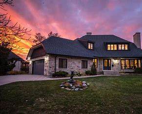

Properties For Sale:
- Welcome to Birchmount!This large home has 6 bedrooms, 4 bathrooms, and a living area of 3400 square feet. Nestled in the heart of Scarborough, Birchmount is a vibrant and diverse neighborhood offering a perfect blend of convenience and community. With its tree-lined streets, well-maintained homes, and lush green spaces, Birchmount provides a peaceful retreat from the hustle and bustle of the city.From parks and schools to shops and transportation, Birchmount has everything you need right at your fingertips. Whether you're taking a leisurely stroll through the neighborhood or enjoying a delicious meal at one of the local eateries,you'll find that Birchmount has a welcoming atmosphere that makes you feel right at home.
- Yorkville offers the ideal family retreat—discover it! With 4 bedrooms, 3 bathrooms, and 3200 square feet of living area, this cozy home has it all. Highlights include a large kitchen with contemporary appliances, a comfortable living area for lounging, and a peaceful backyard retreat that's excellent for summertime cookouts. The layout is light and airy. This property provides the perfect balance of comfort and convenience, nestled in a quiet neighborhood close to parks, schools, and other services. Don't pass up the opportunity to create priceless memories in this gorgeous Scarborough house! Make an appointment to see it now.
- With seven bedrooms, four bathrooms, and four thousand square feet of elegant living space, this Ajax home is stylish. This property is ideal for a family because it has a peaceful backyard, a cozy living area, and a modern kitchen. It's a great opportunity that shouldn't be missed, conveniently situated close to amenities!We're delighted to have you as part of our community, and we look forward to sharing all that Birchmount has to offer. Welcome home!